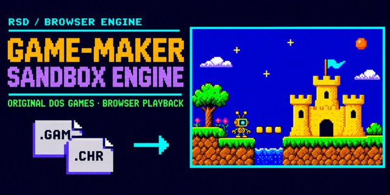

Game-Maker Sandbox Engine
Browser engine for original DOS games

The TypeScript engine behind the Game-Maker: Sandbox Edition web player, as its own npm package: hand it a game's original DOS files and it plays them in a browser.
Executive summary
Why it exists
Game-Maker: Sandbox Edition grew its engine inside one large repository. Anyone who wanted to play or read RSD Game-Maker games elsewhere had to take the whole app. I split the engine into its own public repository and npm package, keeping its git history.
Outcome
Published on npmjs and GitHub Packages, with its own tests, changelog and releases. It is the same engine the Game-Maker: Sandbox Edition web player runs.
My role
Maintainer. The split was done by AI agents under my direction, as with the rest of Game-Maker: Sandbox Edition.
Technical overview
How it works
GameFiles takes the files from one game's DOS directory (DOS 8.3 names, original bytes) and finds the main .GAM file. runGame plays it on a Machine that owns the screen, keyboard and audio, including the native title menu, instructions, credits, scores and function keys, with hooks that report play without changing timing or game data. The same codecs read .GAM and other native files in Node.js. The package ships its audio worklet and TypeScript declarations and has no runtime npm dependencies.
Hard parts
Staying the same engine as the web player while living in its own repository, and refusing bad input: the parsers reject scene tables that run past the file, and the GIF decoder caps image size.